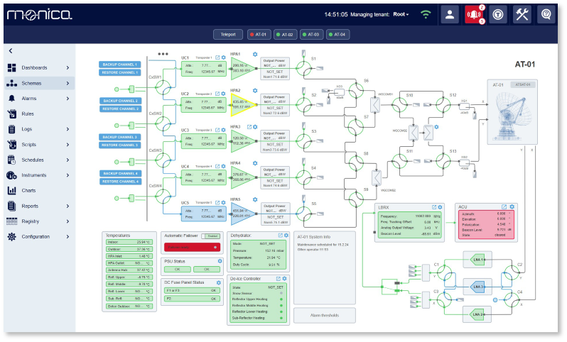

AI tool for telecom network monitoring
Elinext built real-time monitoring for physical and virtual network components across a large telecom environment.
Read the case studyProposal brief for Amphinicy Technologies
Saw Amphinicy hiring a Fullstack Python Developer for a multi-orbit, multi-frequency SATCOM OSS. With Monica and Blink tied to modern ground operations, this looks like delivery load plus integration risk.

That role says Amphinicy is growing a Python-heavy web layer around satellite operations, not only filling a spare seat. Monica already spans monitoring, automation, visualisation, reporting, REST, WebSockets, SNMP, time-series data, and remote agents. That breadth is powerful, but it also makes each new OSS flow touch drivers, data models, deployment, and verification. If the team scales features faster than test and release paths scale, customer pilots can wait on integration fixes instead of product learning.
Monica setup starts with installer packages, driver creation, and equipment connection.
Useful next stepMake those three actions the first automated smoke-test path in CI.
Monica v7 moved distributed monitoring to lightweight Remote Agents.
Useful next stepRun a small remote-site test rig with each merge before demos.
We would place a dedicated squad under your PO or PM for a six-week pilot.
Trace the Python service, Monica interfaces, drivers, and remote-agent paths that can block multi-orbit OSS demos.
Create contract and smoke tests for REST, WebSockets, SNMP paths, plus one simulated ground-station equipment path.
Add Jenkins or GitLab CI stages for package builds, environment checks, and repeatable demo deployments.
Ship the pilot with weekly demos, defect triage, and clear handover notes for Amphinicy engineers.
Elinext is a full-cycle software development provider, working since 1997 with about 700 in-house specialists and no freelancers. For this work, our fit is practical: web, backend, QA, DevOps, and Python teams can join under your PO or PM. We hold ISO 9001 and ISO 27001, which matters for mission-critical systems and customer audits. Teams have delivered work for Siemens, Broadcom, Volkswagen, TRUMPF, TUI, and other large clients. That gives the proposed pilot a stable delivery base without asking Amphinicy to slow current roadmap work.
Elinext built real-time monitoring for physical and virtual network components across a large telecom environment.
Read the case study
Elinext improved a Jenkins and QA pipeline for an infrastructure management solutions provider.
Read the case study